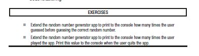
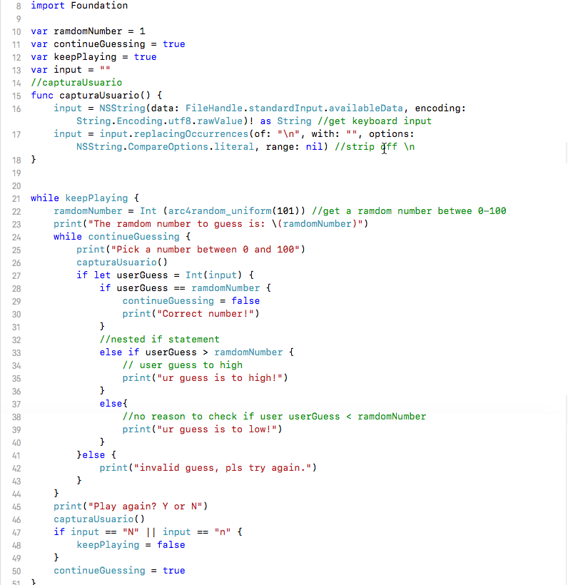

Exercise 1 Capitulo 4: Modificacion de la aplicacion RandomNumber
Ejercicio:
-Extienda la aplicación del generador de números aleatorios para imprimir en la consola cuántas veces el usuario adivinado antes de adivinar el número aleatorio correcto.
Ejercicio resulto:
Descargar:
Ejercicio1C4